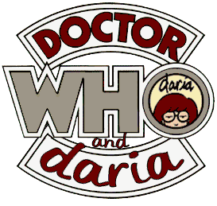
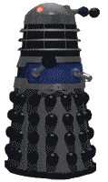

Doctor Who Gives A DamnA Daria / Doctor Who crossover Fan FictionBy Yui Daoren |
|
|
The town was quiet. The citizens were at work and their children at school. The sky was blue with wisps of white clouds here and there. In the 'village green' beside a statue of a bearded fellow whom no one seems to remember, a blue box began to materialize slowly and a grinding/thumping noise frightened away some birds. Looking much like a large phone booth, it was a perfect replica of an old English Police Call Box from a time before police carried portable radios.
After it solidified and the green grew silent again, a door opened on the front of the police box. A tall man with curly hair, burgundy overcoat, and large fedora hat came out. His most notable item of clothing was an enormously long multicolored scarf around his neck. His hands in the pockets of his trousers, he looked around, looking relaxed and somewhat disinterested.
A young woman with shoulder-length, slightly curly brown hair, a white shirt covered by a nice sweater-vest, brown trousers, calf-high leather boots and a dressy brown jacket emerged from the box, looked around and donned a slightly disappointed look.
"Are we in the right year, Doctor?" She asked, more than a hint of England in her accent.
"Oh, yes, Sarah. This is the year two thousand, in the United States. A little town called Lawndale." The man said, his voice was deep and resonant and also with a British accent.
"Well, where are the flying cars? The super-cities? Everything the pulp sci-fi magazines promised?" Sarah asked, smirking.
"Actually, Earth didn't reach that point until... oh... 2135 or so. Primarily due to large corporations slowing standards down while trying to corner various markets, thus slowing technological advancement."
Sarah shook her head and shrugged her shoulders. She was used to stories of humanity being its own worst enemy. Pulling the box's door closed behind her, she asked: "So, where is this broken warning system we're supposed to fix?"
The Doctor pulled out a piece of paper from an inside coat pocket and looked at it, then at the surrounding area, and back to the paper. Stuffing it back into his coat pocket, he pointed to his left with his other hand.
"This way!" He said, and turned to his right and marched off.
With a subtle roll of her eyes, Sarah followed.
"What does it look like?" She asked.
"Well, it's about eight feet high, vaguely hemispherical. It's sort of an advanced Doppler radar dome, really." The Doctor explained while playing with a yo-yo. "It's been camouflaged so the local population won't complain about it. People don't like a military presence in their back yards in this period."
"Which still doesn't answer the question, Doctor." Sarah commented while looking over at a pile of broken branches and other debris.
"Oh, yes. Actually, the Brigadier said it looked like a large... strawberry." The Doctor informed her, smiling.
Sarah donned a wry grin. "Oh, I'll bet no one knows it's even there. Eight foot strawberries are common around these parts, or so I hear." She said with much sarcasm.
"Silly as it may sound, Sarah, it was successful. When it was erected in 1968, UNIT made it appear as if it were a practical joke by some locals. A quick bribe to the town council and it was given landmark status." The doctor stopped and grinned at Sarah. "I did tell them to hide the network in plain sight, after all."
Sarah smiled at this as they skirted another pile of debris.
"Looks like they had a storm of some sort - probably a hurricane." The Doctor commented.
"That must be what damaged the strawberry." Sarah commented.
The Doctor stopped and looked about again. "It would take more than strong wind to knock out that installation." He mused to himself as he looked around.
The two walked on in silence for a while, observing the minor damage done to a few buildings.
The Doctor crossed the street in one of his sudden and seemingly random direction changes and the two entered a complex of buildings that was marked as the local high school. He wandered around the grass in the quad, looking lost.
"You're not lost, are you Doctor?" Sarah asked, watching him saunter about.
"Oh, I'm sure some landmark will ring a bell."
A quiet moment passed, broken by the sound of the day-end bell in the school.
"There, you see? I told you so." The doctor said, grinning at his friend.
Sarah smirked and shook her head at his awful humor as teenage students bustled around them on their way home. Sarah looked around the crowd for a face that didn't seem too preoccupied, or at least looked reasonably intelligent.
"Excuse me?" Sara called to a pair of girls who were walking together.
The girl wearing a green jacket and large, round glasses stopped and looked at her. The girl who had a red shirt draped over her black tee shirt paused as well. Their faces were impassive, almost bored.
"Could you tell me where I might find a giant strawberry?" Sarah asked.
The girl in the red shirt raised one eyebrow in mild surprise.
"You actually want to see that thing?" The girl in the glasses asked, her voice almost flat.
"Yes, well, models of large flora are something of a hobby." The Doctor said, smiling.
"Here I thought we lacked lives." The girl in glasses muttered.
"Um, we're sort of headed near there anyway." The girl in the red shirt offered. "How about we just show you?"
The girl in the glasses shot a nasty look at her partner.
"Yes, that would do nicely." The Doctor said, smiling. "I am the Doctor, and this is my companion, Sarah Jane Smith"
"I'm Jane, and this is Daria. Please pardon her enthusiasm, she just loves meeting new people." Jane smirked.
Daria shot her friend another nasty look.
Noticing her growing discomfort, the Doctor produced a wax paper bag from one of his coat pockets.
"Care for a Jelly Baby?" He offered, holding the bag of sweets out to both girls.
"No, thank you." Daria said stiffly.
Jane took one of the sweets, and the Doctor took one out for himself and replaced the bag.
"Shall we be off, then?" Sarah asked, smiling.
Daria shrugged, and turned toward the big strawberry.
"Mmm. This is good." Jane commented on the confection.
The Doctor and Sarah followed several paces behind. Jane managed to draw Daria into conversation and they discussed their day. Daria made many cutting and sarcastic remarks, as was her habit.
"Daria rather reminds me of myself at that age." Sarah commented, leaning toward the Doctor so she could whisper.
"Oh? In what way?" The Doctor asked.
"She's such a cynic."
"Yes, she is. And quite intelligent, too." The Doctor suddenly looked surprised. "You? A cynic? I find that rather hard to believe."
Sarah giggled and made a face at her friend.
They rounded a corner and the strawberry came into view. It was on its side, a large hole apparent on the exposed flank. The Doctor quickened his pace.
"Oh, dear." He said, looking up at the strawberry.
"The storm did that?" Sarah looked amazed.
"Actually, it was a Jaguar." Jane said.
The Doctor looked at Jane, incredulous. "A large cat? That seems unlikely. They don't even like strawberries."
The Doctor returned to examining the strawberry. Daria smiled very slightly. Jane looked confused briefly and then smirked at the joke.
"We're not going to be able to fix it, are we?" Sara asked.
The Doctor reached for one of the 'seeds' on the strawberry.
"I think the Lawndale Chamber of Commerce is taking donations to get it repaired, and setting aside some operating money." Daria commented, giving Sarah an odd look. "Good thing, too. I was afraid they'd spend money on something frivolous, like the library."
Sarah smiled at the sarcasm while the Doctor pressed on another seed.
"What is he doing?" Jane asked Sarah.
Sarah opened her mouth to answer, but was interrupted by the Doctor finding the seed he was looking for. A panel opened, making a 'bleep' noise.
"Ah, yes!" The Doctor exclaimed.
The panel showed four lights, three glowed red and one green. The Doctor frowned.
"Oh, no."
Daria and Jane were thunderstruck. Daria recovered first and walked up to the strawberry. She watched the Doctor press buttons and study a small display.
"Ok, what the hell is this?" Jane asked.
"Part of an early warning system network." The Doctor explained over his shoulder.
"In a strawberry?" Daria asked.
"Camouflage." Sarah offered.
"Why hide weather radar?" Jane asked to herself.
Daria walked around the strawberry, studying it now that it wasn't just another example of local folly. Externally, there was very little special about it, made basically of wood. Looking in the large hole revealed what Daria recognized as a radar dome of the sort used for Doppler radar. There were cables and some metal boxes stuffed discretely at the bottom of the strawberry. It was all badly damaged from the close encounter with a sports car.
Daria paused again by the Doctor.
"The radar dome is facing upward, or would be if it wasn't on its side." She said.
"Yes." The Doctor answered, distracted.
"What was it supposed to track? Meteors?"
"No." The Doctor answered with a singsong lilt in his voice.
Dara waited, hoping the Doctor would explain. When all he did was continue to fiddle with the control panel, she sighed.
"Well, what does it track, then?"
"At the moment?"
"Yes, fine." Daria answered, exasperated.
"Nothing. It's broken."
"Doctor! You're being rude." Sarah admonished.
"And evasive." Daria said, frowning.
The Doctor slammed the panel closed.
"It's ruined. Nothing anyone can do for it, Sarah. It will have to be replaced."
"Doesn't that leave this area..." Sarah paused, glancing at Jane and Daria. "... exposed?"
"Yes, well... it shouldn't hurt to be without it for a little while. We'll contact UNIT and get things set straight soon enough."
"UNIT? The United Nations Intelligence Taskforce?" Daria asked, cocking an eyebrow in surprise.
"Yes. How did you know about..." Sarah began.
"UNIT is... or was... a rumor on the Internet." Jane explained.
"Internet?" Sarah looked confused.
Jane and Daria exchanged glances.
"Worldwide computer network that was open to the public. It was a grand idea that was eventually drowned in commercialism. This is a fascinating era for computers, Sarah. It's almost guaranteed that there's a computer in every home in this town at the moment. And they're such little things." The Doctor indicated size with his hands.
"Oh."
Daria studied the faces of the Doctor and Sarah for a moment.
"Would you two like some pizza?" She said after a time.
Jane looked at Daria, totally surprised. Daria caught the look, then shrugged noncommittally.
"You know, I am feeling a little peckish." The Doctor said, grinning.
"Jane and I were going to the Pizza King anyway. I'll buy you a few slices and you can tell us about UNIT... and this strawberry." Daria said, motioning their guests to follow.
The fast food restaurant was nearby, and they were soon at table with Daria and Jane's usual pie, one size larger to accommodate the extra mouths.
After Sarah had tried a few bites, commenting on the difference between this and the pizza she had experienced in London, Daria sprung her questions.
"Ok. That was some rather expensive equipment out there, and well hidden enough that no one around here suspected it to be anything out of the... well, 'ordinary' isn't really the word, but you get my meaning." Daria took a sip of her soft drink. "So, you two work for UNIT, suggesting that the radar was operated by the same."
"All true, yes." The Doctor agreed.
"UNIT is supposedly in existence to investigate claims of alien intelligence, and to defend earth against hostile aliens." Jane said.
The Doctor nodded.
"Suggesting the radar was on the lookout for... and I really hate to use the acronym... UFOs." Daria continued.
"Well, alien spacecraft, yes."
Daria sighed. "I'll bet Artie wishes he was here." She mumbled quietly to herself.
"Oh? Who is Artie?" The Doctor asked.
"Local UFO fanatic and conspiracy theorist. He thinks aliens stole his skin and left him with a synthetic outer coating." Jane explained.
"Really? Odd. I didn't think the Plaxitons had made it out this far."
"Plaxitons...?"
Daria's inquiry about that comment was cut short when the lights went out. A collected moan of irritation came from the customers, and was shattered by a scream. Focusing on the source, they saw a blonde girl in ponytails and a cheerleader's uniform frozen in place, pointing out the window toward the sky, agape.
Sarah and the Doctor quickly went to see what the girl was frightened of, Daria and Jane hot on their heels.
"What the hell?" Jane muttered.
"Is that a...?" Daria started, doubting her sight.
"Flying saucer?" The Doctor finished. "Yes. A Dalek craft." He finished, sounding serious and concerned.
"Daleks?" Sarah seemed frightened by this word.
They watched the Dalek ship hover toward Lawndale High School, extend landing gear and set down on the football field. Several other ships were dropping small pods, and one landed close by. A door on the pod swung down to form a ramp, and a roughly cylindrical machine with an eyestalk, plunger-like hand and what appeared to be some sort of gun glided out.
"Is that a Dalek?" Jane asked in a whisper.
"Yes." The Doctor answered solemnly.
"It looks like a salt shaker." Daria commented. "How dangerous are they?"
"An entire species of vicious megalomaniacs with advanced energy weapons and some limited time travel capabilities."
Daria blinked, and looked thoughtful and just a little frightened while staring at the Dalek.
It glided down the street purposefully - its eyestalk scanning back and fourth. A police car rounded the corner ahead of the Dalek and stopped a short distance from it. The officer got out, using the car door for cover, and yelled "Freeze!" at the Dalek, pointing his sidearm at the creature.
"Exterminate! Crush human defenses!" The Dalek cried in a mechanical, maniacal voice.
The officer fired his weapon and the bullet ricocheted off of the Dalek's shell. He looked surprised, and fired several more times, each time he pulled the trigger, he looked increasingly desperate.
Then the Dalek returned fire.
The powerful beam weapon cut through the police car like it wasn’t even there, vaporizing the police officer. Daria and Jane shuddered. Several of the students in the pizza parlor choked off screams. The blond girl alternated between screams and loud squeaks. A boy in a football uniform fainted dead away.
The Dalek continued down the street.
"Brittany!" A pained Daria called to the blond. "Get that thing oiled!"
The girl looked confused, but quieted down and turned to the boy who had fainted.
"Kevvy?" She chirped when she saw him on the floor.
"Phone." Daria said.
"Yes." The Doctor solemnly agreed.
Daria rushed to the order counter, reached around the frightened employee and lifted the business phone. She put it to her ear, looked at it, shook it, listened again, then tossed it behind the counter.
"Dead."
"What do we do?" Jane asked.
"I'm not sure." The Doctor said, looking thoughtful.
"The strawberry was an automatic device, right?" Daria asked.
"Yes, it was." The Doctor smiled. "Brilliant idea! Come on." The Doctor marched out the door.
"I don't understand." Sarah called as they ran back to the strawberry.
"Daria has suggested we manually trip the warning circuit on the radar, Sarah."
"To alert UNIT!" Jane exclaimed, understanding. She could imagine the military having success where the police officer did not.
As they arrived, the Doctor immediately clambered into the strawberry through the hole in its side. Jane, Sarah and Daria huddled next to it, hiding and keeping a lookout for Daleks.
"So, remember your theory about using neck implants rather than actually traveling here, Jane?" Daria smirked.
"Ok, so I wasn't exactly accurate. How was I supposed to know aliens would be tasteless enough to actually come here."
"Shh!" Sarah shushed them. "Look!" She said in a strained whisper.
A Dalek glided by on the road. It paused, it's eyestalk pointed directly at them. Seemingly satisfied they posed no threat, it continued on.
The three relaxed.
"Ok, so wanton killing isn't their plan. Thank goodness." Daria said.
"So, what are they up to?" Sarah asked no one in particular.
From inside the strawberry they heard the doctor using some sort of electronic tool.
"What is that?" Jane asked.
"The sonic screwdriver, I should imagine." Sarah answered.
The Doctor popped out of the hole, smiling.
"It seems to be working. UNIT should be aware of... oh no." The Doctor was frowning and looking toward the school.
"What? What do you see?" Sarah asked, looking in the direction the Doctor was.
"The Dalek ship that landed. They're erecting some sort of hyperspatial bridge or time tunnel." The Doctor said, pointing.
"A what bridge?" Jane asked.
"I thought hyperspace was pseudo-science." Daria commented.
"In terms of relativity, yes. But as far as quanta are concerned a nonmaterial subspace is not only possible but required." The Doctor explained as he clambered down from the strawberry.
"But quantum mechanics doesn't literally describe nonmaterial states." Daria said.
"Excuse me." Jane tried to interrupt.
"That's true, however as far as conceptualizing the relative nonexistent state of quanta..." The Doctor continued.
"Excuse me!" Jane barked.
"...it's necessary to make the assumption that..."
"Excuse me!" Both Sarah and Jane yelled in unison.
Daria and the Doctor looked at their friends.
"Could we save the physics lesson till after the alien invasion has been thwarted, please?" Jane said pointedly.
"Oh, yes, I suppose. We'll have to see what they're going to use the portal for." The Doctor said.
"Wouldn't they use it to bring in reinforcements?" Daria asked.
"That's likely, however the energy cost required to use a hyperspace bridge is enormous compared to simply using your space fleet. No, they will have some other reason as well." The Doctor paused and thought for a moment then started to march toward the high school. "Come along!"
The four made their way to where they could observe the football field yet remain hidden. Choosing the same cover the Lawndale Police Department did for their local speed trap, they watched the Daleks finish erecting a five-meter tall toroid and a slightly shorter tower that had a small sphere on top - for all the world appearing to spell out "Oi". The Daleks put a ramp up to the Toroid, leveling about one meter off the ground.
The Daleks worked quickly, the two structures being completed in a few minutes after the four started observing.
"Well, assuming the toroid is the hyperspace gate, what's the tower for, Doctor?" Daria asked.
"Toroid?" Jane asked.
"Donut." Sarah said.
The Doctor tapped his nose a couple of times, thinking. "I don't know. Some of the parts looked like primitive time rotors."
A bright flash of blue-green light announced the opening of the hyperspace bridge. A mirror-like membrane formed in the toroid's middle, and that regurgitated a column of Dalek tanks, followed by a detachment of Dalek soldiers. The tanks and soldiers began taking defensive positions around the Dalek ship.
"Uh oh. Upchuck at nine o'clock." Jane said, pointing down the street.
A red-haired teen was moving down the street with a video camera aimed at the Dalek installation. A port on the tower opened and swiveled to face him.
"Please don't be a death ray." Sarah whispered.
Daria and Jane looked at each other, then raised an eyebrow each as they mouthed the words "death ray" questioningly at one another.
A green beam leapt out of the tower's aperture and struck Upchuck, eliciting a gasp from Sarah, Jane and Daria. Around him a shiny, semitransparent bubble formed. Upchuck was frozen inside it. The bubble floated off the ground and disappeared into the hyperspace gate. The women sighed in relief that Upchuck seemed to have survived the encounter.
"Time bubbles!" The Doctor exclaimed.
"They kidnapped Upchuck?" Jane said, skeptical.
"They can have him." Daria deadpanned.
The tower began firing into Lawndale, seemingly at random. People-laden bubbles began floating overhead toward the gate.
"That was Ms. Li." Jane said, pointing.
"Quinn! My mom!" Daria said, looking at a group of bubbles. "Dad!"
"Trent!" the two exclaimed together.
"What can we do? We have to stop this. We have to save them." Daria said, her voice hinting at tightly controlled emotion.
"There is nothing we can do from this side. We have to find the other side of the bridge and shut it down from there." The Doctor explained.
"There is no way we'd make it to the gate, the Daleks have it too well defended." Daria said. "Besides, how would we get back?"
"No need to worry about that, Daria. Quickly, before we're taken, we must get to the TARDIS."
"The what?" Jane asked as the Doctor and Sarah started off. No one answered.
They dodged Daleks by hiding in the trees whenever they could. They were headed toward town hall and the village green, so far as Daria could tell.
As they crossed the last street between them and the green, a Dalek called from behind them.
"Halt! At once! Halt or you will be exterminated!"
The Doctor and Jane dashed to cover behind some trees, Sarah and Daria dove behind a parked car. The Dalek fired its weapon at the retreating pair. Sarah yelped as molten metal from the car sprinkled around her and Daria, who was anxiously looking for new cover already, the incident with the police officer weighing heavily on her mind.
"No!" Jane growled, seeing the Dalek begin to change position to get a clear shot at her friend.
"Jane! No!" The Doctor hissed as she ran toward the Dalek.
"Exterminate!" The Dalek cried, bringing its gun to bear on Sarah. Jane tackled the Dalek, discovering they were heavier than they looked. Failing to knock it over, she grabbed the gun instead and yanked, causing the Dalek to overshoot Sarah, instead striking the tower on town hall, starting it burning. Jane hung on to the Dalek, keeping the gun facing up and twisting the eyestalk until it came free in her hand. The Dalek fired wildly.
"Vision impaired!" the Dalek yelled, sounding frightened. "Under attack! Vision impaired!"
Daria ran up and grabbed the plunger-like arm of the Dalek, trying to keep it from shaking Jane loose. Jane saw a small, slimy green thing squirm in the transparent upper part of the armor and decided it was its brain.
"Knock it over!" Jane shouted to Daria.
Daria used her weight and some leverage to tilt the Dalek toward her and a shove from Jane sent it over. The canopy cracked and Jane shoved the end of the broken eyestalk into its survival chamber. The wall of the chamber shattered like glass, spilling a clear, viscous liquid. The green thing squealed. The Dalek shuddered, then died.
"Impressive." The Doctor said, startling both girls. He had managed to sneak up during their fight. "I was expecting to have to save the both of you. Instead you seem to have saved Sarah."
"Thank you." Sarah said, looking at Jane. "I thought I was done for."
Jane smiled slightly and shrugged off the thanks.
The Doctor motioned for them to follow and he started a fast walk toward the green. He and Sarah headed straight for the blue police box, opened the door and stepped in.
"Is there going to be room for us all?" Jane asked. "What am I saying? How is hiding in there going to help?"
They paused outside for a moment, and the Doctor called for them to hurry.
"Extreme conditions call for extreme solutions." Daria said, shoving Jane though the door. "I hope you showered today, Lane."
Both in, they froze.
Two sets of three steps led down on either side of the doors to a spacious room with rich mahogany paneling on the walls. Brass rails and handholds lined the stairs and the landing by the doors. High straight-backed chairs were in several corners, with tea tables beside them. In the center stood a pentagonal podium lined with rows of glowing indicators, dials and buttons with more brass railing along its top. Closed doors on the left and right hand side of the room suggested even more space. A monitor or view-screen sat directly across from the outside doors.
The Doctor pressed a button on the podium, and the outer doors closed behind the girls.
"What. In. The. Hell?" Jane whispered.
"Welcome to the TARDIS." Sarah said, smiling.
Daria shook her head and clambered down the stairs to see what the Doctor was up to.
"OK. I'm hallucinating, right? Things aren’t larger on the inside than they are on the outside." Jane said.
"The TARDIS is." Sara explained. "Time and Relative Dimensions in Space. You get used to it."
The Doctor started the view-screen, and displayed a three-dimensional map of the local galaxy. Several overlaid lines pointed away from earth, each color-coded. The Doctor considered the map, rubbing his chin. He adjusted a control, and several lines converged. He returned to scrutinizing the screen.
"We don't have this. Do we? I mean, if we had this kind of technology..." Jane let her query trail off, looking at Sarah.
"Earth doesn't." Sarah answered
"What? But here you two are, working for UNIT. And here this is."
"Jane, the Doctor isn't human." Daria said, absently, as she studied the TARDIS control panel.
Jane was struck dumb, staring at her friend as if she'd gone insane. Sarah looked at Daria with a mixture of surprise and admiration. The Doctor was too engrossed in the view-screen to notice.
Daria adjusted one of the controls. All of the lines on the screen converged and a text panel popped up, though in no language Daria or Jane had ever seen.
The Doctor looked over at Daria, both eyebrows high on his forehead. "Well done."
"The hyperspace bridge originates on Skaro." The Doctor said, adjusting the controls on another panel. "The Dalek home-world. This will be very dangerous, I suggest you two stay here."
"Doctor, we watched our families and friends get taken. This town will be deserted within the hour, and the Daleks don't seem to be planning on stopping with Lawndale. How much safer would we be?" Daria asked, flatly.
The Doctor donned a considering look briefly, then flipped a switch on the podium. The TARDIS began to make a noise, suggesting they were moving.
"We'll have to follow the hyperspace tunnel closely and slowly to avoid detection." The Doctor said. "We'll be there in about an hour."
Daria raised an eyebrow. "That's over ten billion kilometers per second. This is your idea of slowly?"
"Relatively, Daria, relatively."
Daria smirked. "I think Einstein would find that remark... laughable."
"He did have quite a sense of humor, yes." The Doctor smiled, then looked thoughtful. "Wait here."
He sped off through one of the interior doors, giving Daria a glimpse of the incredible size of the TARDIS.
Jane pried her hands off the railing and moved to sit in one of the chairs.
"Daria, what did you mean, the Doctor's not human?" Jane asked as she sat.
"I meant it literally. He doesn’t move right for a human. Then there's this." Daria waved at the TARDIS interior. "The way he talked about things suggested foreknowledge. He's either a madman with some fantastic props, or an alien with extremely advanced technology. Sarah here is wearing clothes from the seventies, and reacted to the pizza like it was a recent fad, and had no idea what the Internet was." Daria looked at Sarah. "You're human, though. You ended up with the Doctor in a similar fashion to us, didn't you?"
Sarah smiled and nodded. "I met him in England in 1973."
"So, if he's not human, what is he?" Jane asked Sarah.
"A Time Lord." The Doctor answered as he re-entered the room carrying a box full of what looked to be random electronics.
Daria opened her mouth to ask what that meant, but the Doctor interrupted. "No time to discuss it now. Things to do, preparations to make."
He plopped the box down on the podium and began sorting though its contents. Using the sonic screwdriver, he began assembling four small devices.
"So, what should we know about Daleks?" Jane asked.
"Well, you were clever enough to discover their primary weaknesses." The Doctor paused and looked thoughtful. "I wonder why they never worked those out?" He asked himself, then resumed work. "They are very single-minded and a tad brutish. Their armor is designed to defend primarily against energy-based weapons; a good whack with a truncheon can crack it - as you discovered. The best way to deal with them, however, is to avoid them."
"They haven't given us a great deal of choice in that area, Doctor." Daria commented evenly.
"True." He said, inspecting his work. "Take one of these. It will prevent them from sealing you in a time bubble. If you come across any of their prisoners, place the device against the bubble, like so." The Doctor demonstrated by placing the back of the device against Sarah's arm. "Then press this button, so." The device emitted a low hum and a brief flash of light. "They will not be aware of the passage of time, so be prepared for some confusion and resistance on their part."
"Standard operating procedure, Doctor." Daria said, looking at the little device.
The TARDIS shuddered and bucked, eliciting a yelp from Jane and a scramble for handholds by everyone.
"What's going on?" Dara asked.
"Interference from the hyperspace bridge. The fields are fluctuating."
The TARDIS rocked again, and the engines sounded like they were straining. Everyone could feel an odd energy twist and turn eerily through their bones.
"We're caught in the prototractus layer. We'll have to materialize!" The Doctor shouted as he flipped switches and pressed buttons.
The TARDIS began to materialize near the Dalek stronghold on Skaro. Luck alone set them down away from Dalek activity.
"We've landed?" Daria asked.
"Yes." The Doctor answered.
"Ugh. I've never liked roller-coasters." Jane said.
"Jane, you dragged me to every roller-coaster in the state." Daria looked at her friend incredulously. "I'd have been tempted to say you had a rather unhealthy attraction to them."
"Ok, correction: Now I hate them." Jane said, still looking a little green.
"I empathize, wholeheartedly." Sarah said, also a bit worse for wear.
"Come along." The Doctor said as he opened the TARDIS doors. "No time to loose."
As they stepped out of the TARDIS, both Jane and Daria stopped and gasped. Though the sun was almost directly overhead, the sky was a dark blue-gray color. The sun itself shone a bright blue-white. The land was desolate and mostly flat, the mountains in the distance showing a pinkish stripe though their otherwise gray outlines. Save for the sounds coming from the buildings, the planet was quiet. Daria and Jane both bounced on their heels, noticing they felt lighter.
"Jane, assuming we're not hallucinating..." Daria started.
"...we're not on Earth." Jane finished, her voice filled with awe.
"Yes, among the first humans to set foot on another celestial body." The Doctor said, sounding amused.
"Travel does expand the mind." Daria said, smirking.
"Quite right." The Doctor said, pulling another device from the pockets of his coat. He held it up before him and slowly turned round. "This way." He said, pointing.
"What sort of defenses do we need to look for?" Jane asked as they started toward the Dalek city.
"Just the Daleks themselves. Unless our little bump with their hyperspace bridge let them know we were coming, they won't be expecting us. Their space defenses are nearly impregnable, so they don't bother much with ground defenses."
"How did we make it through, then?" Sarah asked.
"That TARDIS is something special, isn't she?" The Doctor smiled proudly.
They followed the Doctor, closely skirting buildings and trying to stay low. Several times the Doctor would wave them back and a set of Daleks would glide past. They rounded another corner and a toroid similar to the one in Lawndale came into view in a large work area. It had the silvery membrane and a steady flow of bubbles was escaping it and landing nearby, where they were being collected by several Daleks driving odd looking trucks that were equipped with a pair of manipulator arms. Once the prisoner was collected, the Dalek would drive into an immense warehouse like building.
"Tell me, someone please, that the Daleks aren't doing their grocery shopping." Jane said.
"No, no. Daleks don't eat like that, Jane." The Doctor said in a comforting tone. "They're probably just collecting slaves is all."
"Oh, is that all? Well heck, we can go home then." Jane quipped.
Daria pointed to a large, cylindrical building close to the gateway. "Is that the power source? It looks like a nuclear reactor building."
"Yes, it's a fusion reactor. If we can shut it down it will take the Daleks several weeks to start it again."
"How are the four of us going to assault a military installation? We're not even armed!" Jane asked.
"Stealth, Jane. We'll sneak in." The Doctor answered.
"Come on, let's find out where they're taking the citizens of Lawndale." Sarah suggested.
The four skirted the work area, using the retaining walls that surrounded it as cover. Avoiding the large door being used by the Dalek trucks, they discovered a small door on the side, near the front. The Doctor used his sonic screwdriver on the control panel and, after a few adjustments, the door slid open.
Taking a quick peek in and deciding it was safe enough to enter, he motioned for the three to follow.
The wide hallway was brightly lit and all white. Besides the light panels in the ceiling, there were no features to speak of. Several crossing paths were evident down the way. Daria pulled a marker out of her pocket and marked a small X on the floor near the door.
"What?" She asked, irritated, when she saw Sarah and Jane gaping at her. "Haven't you ever seen anyone draw an 'X' before?"
"Won't that advertise our presence to the Daleks?" Jane asked.
"What are the chances they'll even see it?" Daria asked the Doctor.
"Almost none. Their vision is primarily for tracking. Just keep the marks small." The Doctor answered, holding his finger and thumb together to illustrate.
As they approached the fist juncture, three Daleks glided by though the crossing hallway. The Doctor, Sarah, Jane and Daria froze, certain they were found out, but the Daleks took no notice.
"Let's follow those three." The Doctor said quietly, and started after them.
Daria marked their turn on the floor.
The hall opened up into a cavernous room, looking to be two hundred meters long, a hundred meters wide and at least fifty meters tall. The floor was a grid of square holes that looked frighteningly deep, leaving paths between them that were only a meter wide. The lighting was poor, illuminating less than a meter into the shafts. The Daleks they were following glided toward the center of the room and then turned to the right. The hindmost swiveled its eyestalk to face them.
"Intruders! Exterminate! Intruders!" It cried, firing its weapon.
They tried to scatter, but the narrow walks made it difficult. Daria took a step backwards while trying to turn around, but blundered in her haste and put her foot down into a hole. She yelped, hands flailing futilely for the edge.
"Daria!" Jane cried as she watched helplessly. "No!"
Jane was grabbed by the shoulders and rushed away. Even as the Dalek's deadly beams sliced the air around her, she could only see that hole.
"Oh, Goddess, no." Jane sobbed, her body wracked with grief.
Sarah sat against the wall, holding Jane as she fought to contain her suffering. They had managed to evade the Dalek patrol and were hiding in what appeared to be a storage room off of the thoroughfare the Daleks were using to move captives into the building.
The Doctor paced by the door, looking angry and guilty.
"I should not have brought them along." He grumbled.
Jane slowly brought herself back under control, and her sobbing subsided a little.
The Doctor hunched down in front of Jane, looking serious. "I'm very sorry, Jane. We have to move on right now, there are thousands of your fellow humans to free, and an invasion of your home world to prevent. I need you to help."
Jane sniffled and wiped at her tears. "I know." She said weakly.
The Doctor stood and offered his hand. Jane took it and he helped her to her feet, then helped Sarah.
"Now, we'll need a look at that reactor." The Doctor said, musing. "Once we know where the prisoners are, we'll shut down the reactor, and get the prisoners to the TARDIS."
The Doctor and Sarah jumped at a loud bang. They spun around and saw Jane standing in one of the containers, a deep dent along the top edge where she had struck it. Jane held up a meter long, heavy looking reinforcement bar. "Dalek cracker."
Sarah accepted one after Jane clambered out of the crate, and the three skulked out the door.
The hallway was dark, lit only sparsely. A shadowy figure limped along, favoring her left ankle and hugging the wall, using it as support. At every door the girl would try the lock and move on. She had long ago lost count of all these doors. The hall seemed to go on forever.
As she had that thought, the hallway proved to be finite. At its end another, larger door stood. She pressed the lock key beside it and - much to her relief - it opened.
She limped in to the room, blinking against the brighter light. It appeared to be an assembly line.
Daria held up one half of her broken glasses to her face, and was startled to see signs written in English marking each position on the line.
"Slave labor." She mumbled to herself, and got to work reading the instructions at each station.
She found a station with a bonding tool and tried it on her glasses. She was impressed when the tool bonded the halves together seamlessly. The glasses may as well have never been broken in the first place. She pocketed the tool, expecting it would be useful later.
She passed by several more stations, reading each instruction set that was posted. Crates full of partly assembled components led her to realize what was assembled on this line: Daleks.
That realization brought on a plan.
The Doctor stood on one side of the door, and Jane on the other. Sarah stood ready to call attention to herself. The Doctor used his sonic screwdriver on the door lock and the door slid open after a moment. Jane took a quick peek inside, then held up one finger.
Sarah took a deep breath, then rushed by the door, yelling.
"Halt! Obey! Halt!" The Dalek called, spotting Sarah.
Jane saw the suction-cup hand and eyestalk begin to emerge from the doorway and timed her swing carefully. With a grunt of effort, Jane swung the synthetic bar and contacted the Dalek squarely in its survival center. The armor shattered and the Dalek screamed. Another hit finished it.
Jane shoved the dead Dalek back into the room from whence it came, and the Doctor and Sarah followed her in.
"Excellent." The Doctor said, looking though a set of observation windows at rows and rows of captives. He shifted his attention to a control panel by the observation windows. "We will be able to shut down the time bubbles from here."
He turned to see Sarah holding the dead Dalek in place and Jane prying the plunger-like arm off.
"What are you up to?" The Doctor asked.
"Testing... a... theory." Jane said, grunting with effort.
The arm came loose and Jane ended up on her behind.
"Ow." Jane said as she stood.
"What theory would that be?" The Doctor asked, looking skeptical.
"That those locks will open for this." Jane said, placing the Dalek's arm against the lock on the far side of the room. The door slid open to reveal a ramp that led down to the prisoner storage room.
"Good." Jane said, looking satisfied. "Come on, let's go make that reactor go boom."
"Ah. Yes, well, how about we just shut it down instead?" The Doctor suggested, nervously cheerful.
"Because not enough Daleks die that way." Jane snarled and marched out of the room, back toward the reactor.
The Doctor and Sarah rushed to catch up with the angry artist. The Doctor was about to admonish Jane to focus on the larger picture when three loud 'whump' noises, like distant explosions, caused them to pause.
"What was that?" Jane asked.
Any reply was engulfed by loud klaxons. Several Daleks rushed from rooms farther down the hall toward the hyperspace bridge and reactor.
"We'd best free the prisoners now, and retreat to the TARDIS." The Doctor said.
Jane and Sarah rushed back, with the Doctor following. Jane and Sarah went to the base of the ramp to try and orient the prisoners, numbering a few hundred, while the Doctor operated the controls.
All at once, the hall full of bubble-imprisoned victims went from dead silence to the surprised and fearful screams and yelps of hundreds of confused people.
"Calm down! Everyone listen!" Sarah called. "Please calm down!"
Jane watched and waited for a few moments, the crowd still confused. She put two fingers in her mouth and sounded a long, shrill, ear-piercingly loud whistle that managed to get the attention of everyone.
"Listen up! Stay calm, people, we're here to rescue you." Jane said, sounding official. "You will quietly follow us. Stay orderly, and move quickly. If someone needs help, help them, just make sure you all keep up, got it?"
"Where are we? What's going on?" Someone asked from the back.
"We'll explain once you are safe." Sarah answered.
The crowd murmured, and someone pushed their way to the front.
"Jane?"
"Hi Mrs. Morgendorffer." Jane said, quietly.
"What's going on?"
"I wish I could explain right now. We have to get you out of here, Ok? We'll explain later."
"But..."
"Mrs. Morgendorffer, please. Trust me, help me out here." Jane said, a pleading look in her eye.
Helen Morgendorffer looked at Jane for a few quick moments, then turned to the waiting crowd. "All right! What are we waiting for? Let's move it!"
Her commanding voice seemed to make the people move as if by force. They filtered by, Sarah leading the way.
Jane held Helen back by the shoulder. "We have to talk." Jane said sadly.
"What's wrong?"
"Wait until they've passed." Jane said, indicating the citizens of Lawndale.
They waited, Jane waving people on, trying to keep them moving. She had to rebuff questions several times, with the help of some lawyer-like stares from Helen.
"Janey!"
"Trent!" Jane grabbed her brother and hugged him.
"What's all this? I was asleep, then..."
"I'll explain later. Go keep that line moving, Ok?"
"Uh, sure thing." Trent said, then headed after the stragglers.
"Helen!" Jake cried as he approached, Quinn following. "What's going on?"
"I don't know yet. Jane seems to know, she'll explain."
The last of the crowd mounted the ramp to the upper level. Jane started to follow, leaving enough distance for privacy.
"Mr. and Mrs. Morgendorffer..."
"Wait a moment." Helen interrupted. "Where are we?"
Jane sighed. "Look, it's nothing you're going to believe - not easily."
Helen's eyebrows went up in surprise. "What do you mean?"
"You're on an alien world called Skaro. Earth is being invaded by Daleks."
"Oh, Jane I don't think this is a time for jokes." Jake said.
Jane sighed again. "Do you feel lighter?"
Helen paused to consider, then nodded her head.
"How did you get here?"
"I... Well, I don't know." Helen had to raise her voice over the klaxon as they entered the hall. "What is that awful noise."
"The Daleks know we're here now, that's the alarm." Jane said. "I'm dead serious, Mrs. Morgendorffer. Daria and I avoided capture and we met a couple from UNIT..." Jane started.
"Where?"
"Never mind that detail..." Jane started again when another series of explosions in the distance startled the crowd.
"Calm down everyone, we're headed away from the battle, Ok?" Jane yelled out.
Helen looked sharply at Jane. "Where is Daria?"
"Um... I'm really sorry. We got spotted by a Dalek patrol, and when we tried to run, she fell into some sort of... of shaft." Jane paused and fought down her grief again, her eyes misting.
"Oh, no. No."
Jane nodded that it was true. "I'm sorry." Jane said again, her voice shaking. "There wasn't anything I could do."
Helen's shoulders shook, and she covered her face with her hands. Quinn looked shocked. Jake put his arm around his wife and his daughter to guide their steps as they moved down the hall.
Daria climbed out of the hatchway and found herself on the roof of the warehouse. She slung her makeshift Dalek arm-weapon over her shoulder and followed the sounds of explosions and gunfire. She found herself back at the reactor and hyperspace gate in short order.
Crouching near the edge of the roof, she observed the situation below. Four human soldiers were using the smoldering remains of a Dalek tank as cover, and were fighting off Daleks on both sides. Another group of eight soldiers was attacking the reactor building's entrance.
It took a great deal of gunfire to take down a Dalek, and Daria wondered how much ammunition they had left.
"Ok, time to see if this thing works." Daria uttered to herself, hefting her handmade weapon.
She aimed the weapon at one of the Daleks that was pressing the attack on the first group of humans and pressed the trigger that used to be the cap to her marker. The weapon emitted a bright blue Dalek beam, instantly causing the Dalek she was aiming at to explode.
"Whoo-yeah." Daria said, and aimed at another.
Jane pushed her way past the crowd of Lawndale residents, wanting to find out what was delaying them. They had finally made it outside the building, and she hadn't been expecting any resistance. Helen Quinn, and Jake followed close behind. They were still melancholy from the news of Daria's death.
Reaching the front, they saw the Doctor and Sarah crouched low, the Doctor peering around a corner. The Morgendorffers hung back.
"What's up?" Jane whispered to Sarah.
"Daleks around the corner."
Jane snuck a peek at the situation and saw three Daleks blocking their escape. "Ah, hell." She grumbled.
A woman wearing exercise clothing with a whistle around her neck pushed her way to the front of the crowd.
"Miss Lane! What is taking so long?" She snapped.
The Doctor's eyes went wide. He shushed her loudly.
"Don't you..." The woman started, annoyed.
"Ms. Morris! Shut up!" Jane quietly growled, interrupting.
"Prisoners located!" One of the Daleks cried and began gliding forward.
"Back! Everyone back!" The Doctor shouted.
Turning so many around is a slow task, so Jane readied herself to buy some time. As the Dalek rounded the corner, she whipped her club upward, bashing its gun out of the socket in one blow.
"Under attack! Weapon malfunction! Under attack!" It jabbered, attracting the other two.
Jane struck again, smashing its survival chamber. She gave it a mighty shove, rolling back at its companions, scattering them for a moment. Taking advantage of their separation, Jane attacked the closest Dalek, removing it's eyestalk and gun quickly, rendering it harmless. A final swing to it's survival chamber rendered it dead.
"Jane! Behind you!" The Doctor called warning, running to intercept the third Dalek.
Jane spun and found herself looking down the barrel of a Dalek gun. It was too far away to hit with her truncheon.
A Dalek beam cut through the air. Jane shrieked. The Doctor winced - too late again.
The Dalek exploded.
A few moments passed in silence, the Dalek parts raining down around them. Jane was still cringing, her arms covering her face. The Doctor looked at the destroyed Dalek, then at Jane as he smiled broadly.
"Jane." He said quietly.
"Yes?" Jane squeaked.
"You survived."
"I did?"
"Yes. Open up, take a look."
Jane gingerly lowered her arms and looked at the remains of the Dalek.
"Backfire?" She asked, confused.
"Deadeye." Someone called from behind her.
Jane spun around. "Daria!"
"Alive and kicking... ass." Daria smirked, limping toward her friend.
Jane wrapped her arms around Daria in a tight hug. "I thought you were dead."
"So did I, for a while there." Daria said, returning the hug. "I got lucky, the shaft curved off slowly to level and I only twisted my ankle." She explained as they broke their embrace.
"Doctor, UNIT troops have captured the reactor and hyperspace interface, but they really can't hold it for much longer, we should get these folks through." Daria said, indicating the crowd. "It would be faster than squeezing them through the TARDIS doors."
"Yes, agreed." The Doctor said, preferring not to use his prized vehicle as a taxi anyway. "Sarah! Fetch everyone to the hyperspace bridge." He called to his companion.
"Right!" She confirmed and rounded the corner.
Helen led the crowd, until she saw her eldest daughter.
"Daria!" She ran up and hugged her. Jake and Quinn, close behind, soon joined in a familial embrace.
"Reunited family suffocates daughter!" Daria called from the middle of the embrace.
The Morgendorffers backed off slightly, still smiling.
"Jane told me you were dead!" Helen said.
"I'm happy to be wrong about that." Jane smirked.
"Look, I have to finish up here, Mom. You get Dad and Quinn home."
"No, no! You're coming with us."
"I can't, Mom. I wish I could, but I really have to finish up here. If we don't bloody the Dalek's noses, we'll just be inviting them to try this again. I'll be along shortly, the Doctor can deliver us home." Daria turned to the waiting Time Lord. "Right?"
"Quite right, yes."
"Who are you?"
"Oh, yeah, sorry. Mom, this is the Doctor." Daria turned to the alien. "Doctor, please meet my mother, Helen Morgendorffer."
"Hello there." He said.
"Hello."
"My father, Jacob."
"Greetings."
Jake shook his hand.
"Hey, who are you, exacly?" Jake asked.
"No time, no time..." The Doctor said, trying to sound affable.
"My sister, Quinn."
"Good to meet you."
"Um... Hi." Quinn looked at her sister. "Why do all of your friends dress so weird?"
"Quinn!" Helen gave her youngest daughter a warning glower.
"Look, let's just get moving, ok?" Daria said, starting toward the hyperspace bridge. "Doctor, my accidental exploration of the lower levels revealed some disturbing facts."
"Oh?"
"The Daleks have at least one assembly line set up for slaves - human, English speaking slaves - to build more of their armor shells. It's where I got the material, tools and information to build this." Daria indicated her weapon. "If humans don't prove to be more trouble than we're worth, the Daleks will be back again. If we leave this facility standing, they'll raid someone else."
Daria paused, looking thoughtful. "Um, there are other races besides these three, I assume?"
"Certainly, yes." The Doctor sighed. "I hate to have to agree, but you're probably right."
"Warrant Officer Benton wants to blow the reactor."
"Benton's here?" The Doctor looked surprised.
"You know him?"
"For quite a while now."
They rounded the last corner, back in the relative safety under the watchful eyes of the UNIT soldiers. Jane and Sarah were rushing people through the gateway, occasionally giving someone a shove if they resisted stepping through the silvery membrane.
Warrant Officer Benton rushed over. "Hello Doctor." He greeted with a heavy English accent.
"Benton, old chap. What ever are you doing on Skaro?"
"Same as usual when you're about, Doctor, trying to save the Earth and live to talk about it." He smiled and turned to Daria. "Which reminds me to thank you, young lady. My men were about to be cut to ribbons. If you hadn't shown up and given the old pepperpots what-for..."
"You're welcome. Can we blow this place to hell and go home now?" Daria asked, getting impatient.
Benton's smile widened. "Direct and to the point." He looked at the Doctor, face becoming serious. "We'll need you to monkey with the reactor."
The Doctor looked insulted. "Monkey? Monkey? Benton, I must say your manner hasn’t improved with your rank." He huffed and started toward the reactor building. "Monkey, indeed! Come along Sarah!"
Trying to suppress a smile, but having only limited success, Sarah followed.
Daria turned and saw Helen waiting for her on the ramp to the hyperspace bridge.
"Mom, go on through! I'll follow soon."
"You come along right now, young lady!"
Daria rolled her eyes. "Jane, handle that."
Jane walked up to Helen, smiling. Her face went dead serious, looking past Helen. "My god! Is that Elvis?" She said, pointing. Helen looked, and Jane shoved her though the gateway.
Jane joined Daria and Benton, smirking. "They always fall for that one."
Daria was looking around, squinting. "This lull can't last. Where are the Daleks?"
"Mm, yes. I was wondering at that myself." Benton said.
The Doctor and Sarah emerged from the reactor building.
"Benton, get your men home - it's set to overload in ten minutes."
"Right." Benton said, sounding satisfied. He blew a whistle and began barking orders, rounding up his men.
Daria brought her makeshift Dalek weapon around and fired. A Dalek exploded as its compatriots fired at the retreating soldiers. Two men dropped, screaming.
Benton barked orders frantically, driving his men through the gate. Soldiers backed away, continuously firing their automatic weapons. Daria did her best to hold back the advancing Daleks, but her weapon could only fire so fast. She worried and wondered how many times she could use it before it was drained.
The Doctor herded Jane and Sarah away from the gate recognizing that their position was too open. If they tried for the gate, the Daleks would quickly burn them.
A Dalek tank crawled around the corner, firing its heavy weapon. The hyperspace bridge shuddered under the impact of the ray, then ceased to function.
"Oh, hell." Jane mumbled.
"Daria! This way, quickly!" The Doctor called, calm and insistent.
Daria ran across the open area, praying to whatever would listen that she might make it unscathed. The group circumscribed the colossal warehouse and slave sweatshop as quickly as they could.
They came to a sliding halt as they approached the TARDIS; two Daleks waited in front of it.
"Doctor! Surrender!" One of the Daleks cried out.
"They know you?" Daria asked.
"We've had a few... encounters."
"Encounters? You're the primary reason they haven't taken over the galaxy!" Sarah half-laughed.
"Is it always this bad when you fight them?" Jane asked.
"No, it's usually much worse." Sarah said with a sarcastic calmness.
"Throw your weapon down! Surrender or you will be exterminated!" The Dalek prodded.
"Give me the gun." The Doctor said.
"What?" Daria looked surprised and angry. "This is all that stands between us and execution!"
"Give me the gun!" The doctor hissed.
Daria glared, but handed him the weapon.
The Doctor worked on the weapon quickly, using the sonic screwdriver. He flung the gun at the waiting Daleks.
"Show yourselves! Obey! Surrender now!" The Dalek said, slowly advancing.
The Doctor stood, raising his hands in the classic surrender position. Sarah followed his lead. Daria and Jane traded glances, then stood as well.
"This had better be part of some brilliant plan." Daria grumbled.
The two Daleks moved to either side of the earthlings and the Time Lord. Jane swallowed hard, and Sarah let out a quiet, nervous squeak.
The Daleks began to tremble, and then they began to ooze green foam from under their armor.
The four defenders of Earth dashed for the TARDIS.
After the doors closed and they could hear the machine dematerialize, Daria sat down heavily on one of the high-backed chairs.
"Something you did to the gun, right?" She asked.
"Yes. I used the beam emitter to jam their life-support systems. Only useful at short range." The Doctor explained as he fiddled with the controls.
"That's why we had to bait them over?" Sarah inquired.
"Yes. Sorry." The Doctor said offhandedly.
Daria looked over at her friend, who was still leaning on the brass railing around the stairs.
"Jane? You OK?"
"Fine. I may never use a salt or pepper shaker again in my life - but otherwise just dandy, thanks."
"I always said you should cut down on your salt. I didn't think it would take an alien invasion to get you to do it, but whatever works." Daria said, smirking.
She stood and roamed over to the control podium and looked at the controls.
"Back to Lawndale." She sighed.
The Doctor looked at the coordinate panel, then at Daria.
"You picked that up quite swiftly." He said.
Daria shrugged.
"Um, this feels funny to ask, but: Do we have to go home right now? I mean, riding around in a machine that can explore the universe is tempting." Jane said, looking at the Doctor.
"Travel expands the mind and all that?" The Doctor prompted.
"Yes!" Jane said.
"Explore new worlds?" Sarah added.
"Oh, yeah!" Jane answered.
"Meet new civilizations?" The Doctor continued.
"Definitely!" Jane sounded really excited.
"To boldly go where no one has gone before?" Daria offered, smirking.
"Yes!" Jane nearly shrieked.
"No." The Doctor said, flatly.
"No?"
"Definitely not. I do believe that in your culture you both are still juveniles. I can't take you from your parents." The Doctor explained.
"Right." Daria said, with only the slightest hint of irritation.
The TARDIS materialized, and the Doctor opened the doors.
"It was... interesting meeting the two of you." Daria said, offering her hand to Sarah. "I'd have preferred to leave out the invasion, but you can't ask for everything."
Sarah smiled and shook Daria's hand. "Perhaps in future?"
"Perhaps."
Jane offered her hand to the Doctor. "Bye?"
"Good bye." The Doctor said, sounding friendly but not taking Jane's hand.
Daria and Jane walked up the stairs and out the doors, then stood utterly stunned. An ocean before them set frothy orange waves on a beach of green sand under a bright pink sky. On the horizon, a red sun was starting to set.
"I can feel my mind expanding." Daria said.